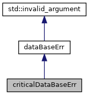

Класс для обработки критических ошибок базы данных. Подробнее...
#include <Errors.h>
Граф наследования:criticalDataBaseErr:

Граф связей класса criticalDataBaseErr:

Открытые члены | |
| criticalDataBaseErr (const string &s) | |
| Конструктор для создания объекта criticalDataBaseErr. Подробнее... | |
 Открытые члены унаследованные от dataBaseErr Открытые члены унаследованные от dataBaseErr | |
| dataBaseErr (const string &s) | |
| Конструктор для создания объекта dataBaseErr. Подробнее... | |
Подробное описание
Класс для обработки критических ошибок базы данных.
Этот класс наследуется от dataBaseErr и используется для представления критических ошибок, которые могут привести к серьезным сбоям в работе приложения.
Конструктор(ы)
◆ criticalDataBaseErr()
|
inline |
Конструктор для создания объекта criticalDataBaseErr.
- Аргументы
-
s Сообщение об ошибке.
53: dataBaseErr(s) {}
dataBaseErr(const string &s)
Конструктор для создания объекта dataBaseErr.
Definition: Errors.h:35
Объявления и описания членов класса находятся в файле:
- /home/stud/Загрузки/TiMP/TiMP_K/headers/Errors.h